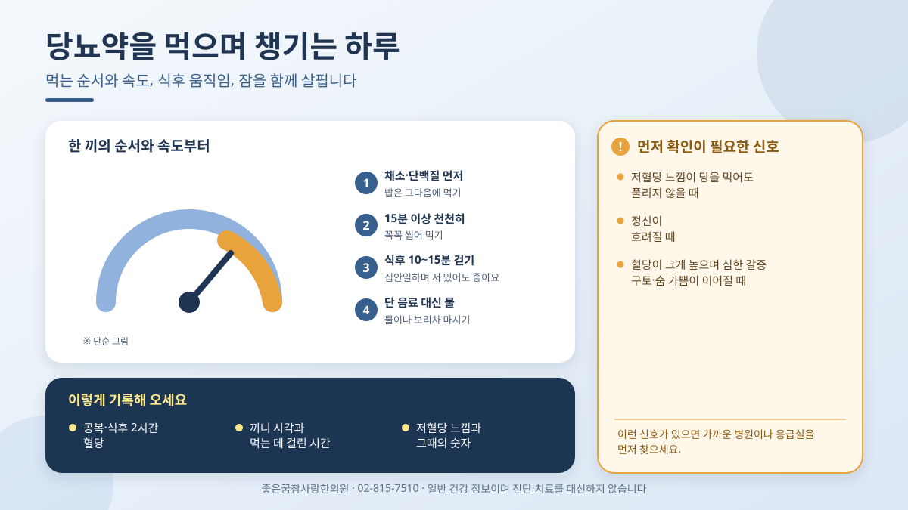

이종호 한의사 감수좋은꿈참사랑한의원 대표원장 (한의사 면허번호 19769)발행 2026-11-26 · 수정 2026-11-26
이 글의 차례
저녁 식사를 마치고 식탁에 혈당 측정기를 꺼내 놓습니다. 손끝을 찌르고 숫자가 뜨기를 기다리는 몇 초 동안, 오늘 먹은 반찬들이 머릿속을 스쳐 지나갑니다. 떡을 한 조각 더 먹었나, 밥을 조금 많이 펐나. 숫자가 높게 나오면 하루 전체가 잘못된 것 같은 기분이 듭니다.
당뇨 약을 드시는 분들께 진료실에서 가장 자주 듣는 말은 "약을 먹는데도 숫자가 왜 이렇게 들쭉날쭉한가요"입니다. 그 마음을 잘 압니다. 약도 꼬박꼬박 먹고 단것도 줄였는데, 숫자는 내 노력을 몰라주는 것처럼 보이니까요.
혈당은 식사뿐 아니라 잠, 움직임, 긴장, 감기 같은 작은 몸살에도 함께 움직입니다. 약은 혈당이 지나치게 오르지 않도록 바탕을 잡아 주고, 그 위의 출렁임은 하루의 생활이 만듭니다. 그래서 약과 생활은 둘 중 하나를 고르는 것이 아니라 나란히 가는 짝입니다.
저는 진료실에서 숫자 하나를 두고 잘했다, 못했다를 따지지 않습니다. 대신 숫자가 높았던 날과 낮았던 날의 하루를 나란히 놓고, 무엇이 달랐는지를 함께 찾아봅니다. 그렇게 찾은 차이 하나가 다음 일주일의 숙제가 됩니다.
당뇨 약은 어떤 일을 하나요
먹는 당뇨 약은 종류가 여럿입니다. 간에서 당이 지나치게 만들어지는 것을 줄이는 약, 몸이 인슐린에 더 잘 반응하도록 돕는 약, 소변으로 당을 내보내는 약, 식후에 인슐린이 잘 나오도록 돕는 약 등이 있고, 두세 가지를 한 알에 섞어 쓰기도 합니다.
어떤 약을 드시는지에 따라 생활에서 살필 부분이 달라집니다. 인슐린 분비를 돕는 약이나 인슐린 주사를 쓰신다면 끼니를 거르거나 평소보다 많이 움직인 날 혈당이 너무 떨어지지 않는지 살펴야 합니다. 소변으로 당을 내보내는 약을 드신다면 물을 너무 적게 드시지 않는지도 함께 봅니다.
약을 먹고 숫자가 맞춰졌다고 해서 혼자 약을 줄이거나 끊으시면 혈당이 다시 오를 수 있습니다. 숫자가 좋아지는 흐름이 보이면 그 기록을 들고 처방한 선생님과 상의하시는 것이 순서입니다.
왜 약을 먹어도 혈당이 출렁일까요
약을 꼬박꼬박 드시는데도 어떤 날은 숫자가 높게 나옵니다. 대부분은 약이 갑자기 듣지 않게 된 것이 아니라, 그날의 생활이 숫자를 밀어 올린 경우입니다. 흔히 보이는 이유를 정리해 보면 다음과 같습니다.
- 밥, 면, 떡, 빵처럼 탄수화물이 한 끼에 몰린 날
- 식사를 빨리 마치고 바로 앉거나 누운 날
- 잠을 설치거나 새벽까지 깨어 있었던 날
- 감기나 몸살, 치통처럼 몸에 염증이 있는 날
- 일이나 집안일로 마음이 크게 쫓긴 날
- 과일, 주스, 달달한 커피를 무심코 여러 번 드신 날
이 가운데 감기와 몸살은 놓치기 쉽습니다. 몸이 아플 때는 평소대로 먹지 않아도 혈당이 오르기도 하고, 반대로 못 드셔서 떨어지기도 합니다. 아픈 날에는 평소보다 자주 재 보시고, 숫자가 크게 벗어나면 처방한 병원에 문의하시는 것이 좋습니다.
공복 숫자와 식후 숫자는 다른 이야기를 합니다
공복혈당은 밤사이 간이 당을 얼마나 내보냈는지, 잠이 어땠는지를 많이 반영합니다. 식후혈당은 그 끼니의 양과 종류, 먹는 속도, 식후 움직임을 많이 반영합니다. 그래서 둘 중 어느 쪽이 높은지에 따라 살펴볼 생활이 달라집니다.
당화혈색소는 지난 두세 달 동안의 평균에 가까운 숫자입니다. 하루하루의 출렁임은 보여 주지 못하지만, 큰 흐름을 보여 줍니다. 집에서 잰 숫자와 당화혈색소가 잘 맞지 않아 보일 때는 재는 시각이 한쪽으로 몰려 있지 않은지 먼저 살펴봅니다.
집에서 잴 때는 공복 한 번과, 일주일에 두세 번은 식사 시작 후 두 시간째 숫자를 재 보시길 권합니다. 같은 메뉴를 먹었는데 식후 숫자가 다르다면 그날 먹는 속도나 식후 움직임이 달랐을 가능성이 큽니다.
저혈당 느낌을 알아 두세요
약에 따라서는 혈당이 너무 낮아질 수 있습니다. 손이 떨리고 식은땀이 나며 가슴이 두근거리고, 갑자기 배가 몹시 고프거나 멍해지는 느낌이 대표적입니다. 이런 느낌이 들면 먼저 혈당을 재 보고, 낮다면 사탕이나 주스처럼 빨리 흡수되는 당을 드신 뒤 다시 재 봅니다.
저혈당이 자주 있다면 약의 종류나 용량을 조정해야 할 수 있으니 처방한 선생님께 꼭 알려 주세요. 언제, 무엇을 하다가, 숫자가 얼마였는지 적어 두시면 상의하실 때 큰 도움이 됩니다. 외출할 때는 사탕 몇 개를 가방에 넣어 다니시길 권합니다.
운동을 평소보다 오래 하신 날이나 술을 드신 날 밤에는 혈당이 늦게 떨어지기도 합니다. 이런 날에는 잠들기 전에 한 번 더 재 보시고, 숫자와 그날 한 일을 함께 적어 두시면 다음에 같은 상황을 대비하기가 수월해집니다.
당뇨와 함께 살펴야 하는 몸의 불편
당뇨는 혈당 숫자만의 이야기가 아닙니다. 오래 이어지면 발끝 감각, 눈, 신장, 잇몸, 피부, 잠과 소화에도 영향을 줄 수 있습니다. 그래서 진료실에서는 숫자와 함께 발끝이 저리거나 둔하지 않은지, 상처가 잘 아무는지, 밤에 소변 때문에 몇 번 깨는지를 함께 여쭙니다.
발은 매일 한 번 들여다보시길 권합니다. 발가락 사이, 발바닥, 뒤꿈치에 상처나 물집, 색이 변한 곳이 없는지 보시면 됩니다. 감각이 둔해지면 작은 상처를 늦게 알아채는 경우가 있어서, 눈으로 확인하는 습관이 감각을 대신해 줍니다.
발을 씻은 뒤에는 발가락 사이까지 물기를 잘 닦고, 보습제는 발가락 사이를 피해 발등과 발바닥에 바르시면 됩니다. 겨울에 전기장판이나 핫팩을 발에 오래 대고 계시면 감각이 둔한 분은 뜨거움을 늦게 느낄 수 있으니 온도를 낮게 두시길 권합니다.
눈과 신장은 증상이 늦게 나타나는 경우가 많아 정기 검사가 중요합니다. 안과 검진과 소변·혈액 검사는 처방한 병원에서 안내받은 주기에 맞춰 받으시고, 결과지를 모아 두시면 몸의 흐름을 보는 데 도움이 됩니다.
잠과 긴장도 혈당과 이어져 있습니다
잠이 짧거나 얕은 날 아침에는 공복혈당이 높게 나오는 분이 적지 않습니다. 몸이 깨어 있는 시간이 길어지면 긴장을 돕는 호르몬이 늘고, 다음 날 단것과 탄수화물이 더 당기기도 합니다. 그래서 진료실에서는 혈당 이야기 끝에 꼭 잠 이야기를 이어서 여쭙니다.
마음이 오래 쫓기는 시기에도 비슷한 일이 생깁니다. 식사가 불규칙해지고, 늦은 밤 간식이 늘고, 움직이는 시간은 줄어듭니다. 이런 시기에는 숫자를 단번에 맞추려 애쓰기보다 잠드는 시각 하나부터 지켜 보시길 권합니다. 잠이 자리를 잡으면 식사와 움직임도 따라오는 경우가 많습니다.
밤에 소변 때문에 두세 번 이상 깨신다면 그것도 함께 적어 주세요. 혈당이 높을 때 소변이 늘기도 하고, 저녁 물 마시는 습관이나 전립선, 방광의 문제일 수도 있습니다. 원인에 따라 살펴볼 곳이 달라서 기록이 큰 도움이 됩니다.
먼저 이렇게 여쭙니다
처음 오시면 저는 대략 이런 순서로 여쭙니다.
- 당뇨 약을 언제부터, 어떤 이름으로, 하루 몇 번 드시나요? 인슐린도 쓰시나요?
- 최근 당화혈색소와 공복혈당은 어느 정도였나요?
- 하루 끼니 시각과 주로 드시는 메뉴는 어떤가요?
- 식사 뒤 걷거나 움직이는 시간이 있나요?
- 잠드는 시각과 깨는 시각, 밤에 소변 때문에 깨는 횟수는 어떠신가요?
- 손이 떨리거나 식은땀이 나는 저혈당 느낌이 있었나요?
정확히 기억나지 않으셔도 괜찮습니다. 약 봉투와 최근 혈당 기록, 검진 결과지만 챙겨 오셔도 충분히 이야기를 시작할 수 있습니다.
일상에서 먼저 해 볼 수 있는 것
생활 관리는 한꺼번에 바꾸기보다 하나씩 쌓아 가는 쪽이 오래갑니다. 아래 가운데 지금 가장 쉬워 보이는 것 하나만 골라 보세요.
- 채소와 단백질 반찬을 먼저 몇 젓가락 먹고, 밥은 그다음에 먹기
- 한 끼를 15분 이상 천천히 씹어 먹기
- 식사 뒤 10~15분 걷거나 집안일하며 서 있기
- 과일은 식후 디저트보다 끼니 사이에 적당량 먹기
- 단 음료 대신 물이나 보리차 마시기
- 잠드는 시각을 일정하게 맞추기
식후에 바로 눕거나 소파에 앉는 습관이 있으시다면, 설거지나 짧은 산책으로 10분만 몸을 움직여 보세요. 다리 근육이 움직이면서 혈당을 쓰는 데 도움이 됩니다. 날이 추운 날에는 집 안에서 제자리걸음이나 계단 몇 층 오르내리기도 괜찮습니다.
근육은 혈당을 쓰는 큰 창고입니다. 걷기와 함께 의자에서 일어났다 앉기, 벽 짚고 팔굽혀펴기처럼 집에서 할 수 있는 근력 운동을 조금씩 더해 보시길 권합니다. 무리하지 않는 범위에서 일주일에 두세 번이면 충분히 시작할 수 있습니다.
외식이 잦은 분이라면 메뉴를 바꾸기보다 먹는 방법을 바꿔 보세요. 밥은 처음부터 3분의 1쯤 덜어 두고, 반찬과 국의 건더기를 먼저 드신 뒤 밥을 드시는 것입니다. 면 요리를 드실 때는 고명과 채소를 먼저 드시고, 국물은 조금 남기시면 됩니다.
간식이 당길 때는 참기보다 고르는 쪽이 오래갑니다. 과자나 빵 대신 삶은 달걀, 두유, 견과류 한 줌처럼 단백질과 지방이 함께 있는 간식을 곁에 두시면 혈당이 덜 출렁이고 다음 끼니까지 버티기도 수월합니다.
술은 혈당을 늦게 떨어뜨리기도 하고 다음 날 아침 숫자를 흔들기도 합니다. 드시는 날에는 빈속에 시작하지 마시고, 안주는 단백질과 채소 위주로 고르시길 권합니다.
한의원에서 함께 살필 수 있는 경우
- 당뇨 약을 드시면서 식후에 졸음과 피로가 심한 경우
- 입이 자주 마르고 몸에 열감이 있거나 반대로 손발이 몹시 찬 경우
- 잠이 얕고 밤에 자주 깨는 경우
- 소화가 더디고 더부룩하거나 변비, 묽은 변이 번갈아 오는 경우
- 발끝이 저리거나 시린 느낌이 있는 경우
- 긴장하거나 바쁜 시기마다 식사가 흐트러지고 숫자가 함께 흔들리는 경우
좋은꿈참사랑한의원에 오시면 먼저 아래 '먼저 확인이 필요한' 신호가 없는지부터 봅니다. 그다음 맥을 짚으며 잠과 소화, 대소변, 손발의 온도와 감각을 여쭙고, 발끝이 불편하시다면 직접 만져 보며 차이를 확인합니다.
진찰한 내용을 바탕으로 생활에서 바꿔 볼 것 하나와 함께 침, 온열 관리, 한약 상담 가운데 지금 상태에 맞는 것을 정합니다. 한약을 상의할 때는 드시는 당뇨 약과 다른 약을 모두 확인하고 신중하게 정하며, 한약을 드시는 동안 혈당 기록을 평소처럼 이어 가시도록 안내합니다.
당뇨 약과 인슐린은 처방한 선생님과 상의 없이 멈추지 않습니다. 한의원 진료는 내과 진료를 대신하지 않고, 그 사이의 생활과 몸의 불편을 함께 살피는 자리라고 생각해 주시면 됩니다.
이렇게 기록해 오시면 상담이 쉬워집니다
혈당은 진료실에서보다 집에서 쌓인 기록이 훨씬 많은 것을 말해 줍니다. 2주 정도만 간단히 적어 보세요.
- 공복혈당과 식후 두 시간 혈당(일주일에 두세 번)
- 끼니 시각과 대략의 메뉴, 먹는 데 걸린 시간
- 식후에 움직였는지, 얼마나 움직였는지
- 약 드신 시각과 빠뜨린 날
- 잠든 시각과 깬 시각, 밤에 깬 횟수
- 저혈당 느낌이 있었던 때와 그때의 숫자
빠진 날이 있어도 괜찮습니다. 숫자가 높았던 날과 낮았던 날을 나란히 놓고 보면 생활과의 연결이 보이기 시작합니다.
오래 함께 가는 혈당을 위해
당뇨는 하루 이틀이 아니라 몇 년, 몇십 년을 함께 가는 일입니다. 매일 완벽하려 애쓰면 지치기 쉽습니다. 숫자가 높게 나온 날은 자책하기보다, 그날 무엇이 달랐는지 한 줄 적어 두는 것으로 충분합니다.
이번 주에는 식사 순서 바꾸기나 식후 10분 걷기 가운데 하나만 골라 보세요. 다음에 오시면 그 일주일 동안의 식후 숫자부터 함께 펼쳐 보겠습니다.
이런 증상은 먼저 확인이 필요합니다
- 저혈당 느낌이 당을 먹어도 풀리지 않거나 정신이 흐려지는 경우
- 혈당이 평소보다 크게 높은 상태로 심한 갈증, 구토, 숨이 가쁜 느낌이 이어지는 경우
이런 신호가 있으면 한의원보다 가까운 병원이나 응급실을 먼저 찾으세요.
함께 읽으면 좋은 글
- 당뇨 전단계·공복혈당장애라는 말을 들었을 때 무엇부터 살피나요?
- 당뇨가 있는데 발끝이 저리고 화끈거리거나 감각이 둔해지는 말초신경병증은 어떻게 살피나요?
- 혈압약이나 당뇨약을 먹고 있는데 한약을 함께 먹어도 되는지 어떻게 확인하나요?
- 당뇨 전단계라고 들었을 때 식사 순서와 간식은 어떻게 살피나요?
- 혈압약·당뇨약을 먹고 있다면 다이어트 상담 전에 무엇을 알려야 하나요?

여쭙는 것
- 당뇨 약을 언제부터, 어떤 이름으로, 하루 몇 번 드시나요? 인슐린도 쓰시나요?
- 최근 당화혈색소와 공복혈당은 어느 정도였나요?
- 하루 끼니 시각과 주로 드시는 메뉴는 어떤가요?
생활에서 해 볼 것
- 채소와 단백질 반찬을 먼저 몇 젓가락 먹고, 밥은 그다음에 먹기
- 한 끼를 15분 이상 천천히 씹어 먹기
- 식사 뒤 10~15분 걷거나 집안일하며 서 있기
한의원에서 함께 살필 것
- 당뇨 약을 드시면서 식후에 졸음과 피로가 심한 경우
- 입이 자주 마르고 몸에 열감이 있거나 반대로 손발이 몹시 찬 경우
- 잠이 얕고 밤에 자주 깨는 경우
먼저 확인이 필요한 신호
- 저혈당 느낌이 당을 먹어도 풀리지 않거나 정신이 흐려지는 경우
- 혈당이 평소보다 크게 높은 상태로 심한 갈증, 구토, 숨이 가쁜 느낌이 이어지는 경우
한눈에 보는 표
| 구분 | 핵심 |
|---|---|
| 여쭙는 것 | 당뇨 약을 언제부터, 어떤 이름으로, 하루 몇 번 드시나요? 인슐린도 쓰시나요? 최근 당화혈색소와 공복혈당은 어느 정도였나요? |
| 생활에서 해 볼 것 | 채소와 단백질 반찬을 먼저 몇 젓가락 먹고, 밥은 그다음에 먹기 한 끼를 15분 이상 천천히 씹어 먹기 |
| 한의원에서 함께 살필 것 | 당뇨 약을 드시면서 식후에 졸음과 피로가 심한 경우 입이 자주 마르고 몸에 열감이 있거나 반대로 손발이 몹시 찬 경우 |
| 먼저 확인이 필요한 신호 | 저혈당 느낌이 당을 먹어도 풀리지 않거나 정신이 흐려지는 경우 혈당이 평소보다 크게 높은 상태로 심한 갈증, 구토, 숨이 가쁜 느낌이 이어지는 경우 |
자주 묻는 질문
혈당이 잘 나오면 당뇨 약을 줄여도 되나요?
약을 드셔서 숫자가 맞춰진 것일 수 있습니다. 혼자 줄이거나 끊지 마시고, 집에서 적은 기록을 가지고 처방한 선생님과 상의해서 정하셔야 합니다.
당뇨 약과 한약을 함께 먹어도 되나요?
드시는 약을 모두 확인하고 신중하게 정합니다. 한약을 드시는 동안에도 혈당 기록은 평소처럼 이어 가시고, 숫자 흐름이 달라지면 알려 주세요.
혈당은 하루에 몇 번 재면 되나요?
약 종류와 처방한 선생님의 안내에 따라 다릅니다. 따로 안내가 없다면 공복 한 번과, 일주일에 두세 번 식후 두 시간 숫자를 재 보시는 것으로 시작하셔도 됩니다.
과일은 먹으면 안 되나요?
과일을 모두 끊기보다 양과 때를 조절하시길 권합니다. 끼니 사이에 적당량 드시고, 주스보다는 씹어 먹는 과일이 부담이 적습니다.
한의원에서 혈당 검사를 할 수 있나요?
당화혈색소 같은 혈액 검사는 한의원에서 하지 않을 수 있으니 방문 전 전화로 확인해 주세요. 내과에서 받으신 결과지를 가져오시면 함께 살펴봅니다.
좋은꿈참사랑한의원은 재진 때 지난번 이야기부터 이어서 여쭙니다. 진료시간과 예약은 오시는 길에서 확인하세요.
어디서 상담받을 수 있나요?
좋은꿈참사랑한의원은 서울 동작구 만양로2길 2 신성빌딩 3층·5층(서울 동작구 상도동, 7호선 상도역 3번 출구 근처)에 있습니다. 한의사 3명(이종호 대표원장, 조영기 수석진료원장, 정원영 진료원장)이 진료합니다. 진료시간은 평일 09:30~20:00(점심 13:00~14:00), 토·일·공휴일 09:30~15:00이며, 방문 전 전화로 확인을 권합니다. 예약은 네이버 예약, 카카오톡 상담, 전화 02-815-7510로 받습니다.
이 글은 일반적인 건강 정보이며 개인의 진단이나 치료를 대신하지 않습니다. 증상이 있거나 복용 중인 약이 있다면 진료를 통해 확인하세요. 치료 효과는 개인마다 다를 수 있습니다.
작성 기준: 일반적으로 알려져 있는 건강 정보를 참고해 정리했습니다(대표원장 감수). 증상 기록은 1~2주 동안 하루 1회, 비슷한 시간에 적어 오시면 지난 상태와 비교하기 쉽습니다.